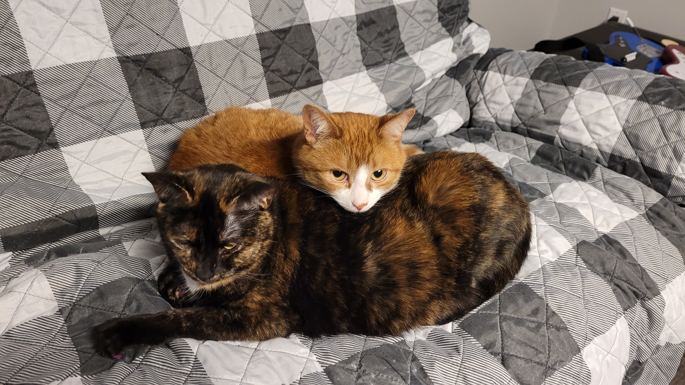

Personal interests
I enjoy generic entertainment like movie and videogames. I like to take care of my cats. During the summer months, I really enjoy gardening. I grow vegetables and fruits. I never tried to grow flower.
Guide for my media interest
| Media | Favorite Genre | Favorite One |
|---|---|---|
| Video games | Role Playing Games | Roller Coaster Tycoon |
| Movie | Horror | A Silent Voice |
| Television series | Drama | Violet Evergarden |
| Books | Romance | The Long Walk |